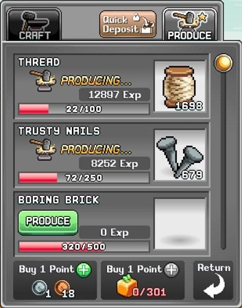
Smithing 개요
Smithing은 World 1(W1) 마을의 수동적(passive) 스킬로, 모루 용량 내에서 재료가 지속적으로 제작됩니다. 제작된 모루 아이템은 World 1의 모루에서 빠른 수령 버튼을 눌러 직접 수령하거나 코덱스(Codex)에서 가져와야 합니다. 단, World 3의 업그레이드 항목인 Anvil Production Pipeline을 해금하면 모루 생산물을 자동으로 수령할 수 있습니다.
생산 아이템에는 Thread, Trusty Nails, Boring Brick 등이 있으며, 각각 다른 Smithing 레벨에서 해금됩니다. 높은 레벨 재료일수록 생산 시간이 길어집니다. Thread는 경험치 효율이 가장 높지만, 장비 제작·연금술·우표·퀘스트 등을 위해 모든 재료가 필요합니다.
| 모루 재료 | 해금 레벨 | 생산 필요량 / 획득 경험치 |
|---|---|---|
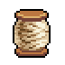 Thread | 1 | 100 / 6 |
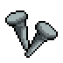 Trusty Nails | 5 | 200 / 10 |
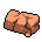 Boring Brick | 12 | 350 / 16 |
| Chain Link | 17 | 700 / 25 |
| Leather Hide | 25 | 1,200 / 35 |
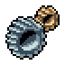 Pinion Spur | 30 | 2,000 / 50 |
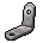 Lugi Bracket | 35 | 3,000 / 65 |
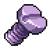 Purple Screw | 43 | 4,000 / 75 |
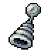 Thingymabob | 50 | 6,000 / 90 |
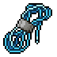 Tangled Cords | 60 | 8,500 / 110 |
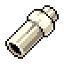 PVC Pipe | 70 | 12,000 / 140 |
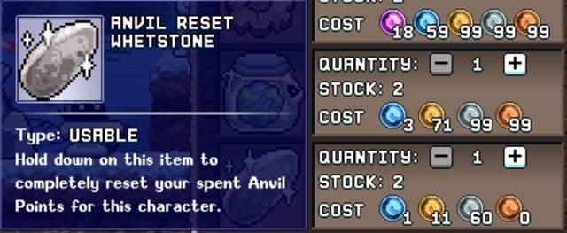
모루 포인트 / Smithing 포인트 배분
모루 포인트(Anvil Points, 또는 스미싱 포인트)는 경험치·속도·용량을 각각 높이며, 캐릭터마다 독립적으로 관리됩니다. World 3 상점에서 Anvil Reset Whetstone을 구매하면 초기화할 수 있으며, 포인트는 다음 방법으로 획득합니다.
- Smithing 레벨 상승
- 모루에서 몬스터 자원 교환 (최대 700개)
- 모루에서 코인으로 구매 (최대 600개)
모루 업그레이드 옵션은 다음과 같습니다.
- Bonus Experience: 아이템 1개 생산 시 획득 경험치 증가
- Speed: 모루에서 아이템이 생산되는 속도 증가
- Capacity: 모루 용량 증가 (재료 휴대 용량 가방을 제작·사용해도 늘릴 수 있음)
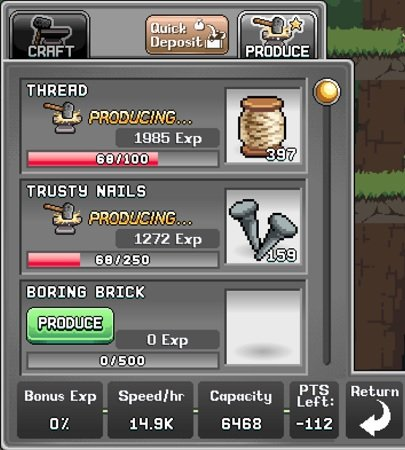
초보 플레이어에게는 Speed를 최우선으로 투자하길 권장합니다. 생산량이 늘어나면 전체 획득 경험치도 덩달아 증가하기 때문입니다. 모루가 자주 꽉 차게 되고 이미 최상위 용량 가방을 사용하고 있다면, 수집 주기(예: 하루 1회)에 맞춰 모루가 찰 수 있도록 Capacity에도 포인트를 넣으세요.
Archer Smithing 빌드
Archer는 Idleon의 Smithing 전문 클래스로, 아래 우선순위의 탤런트를 보유합니다.
| 탤런트 | 효과 | 비고 |
|---|---|---|
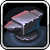 Acme Anvil |
모루 포인트 추가 획득 | 이 탤런트로 얻은 모루 포인트를 World 1에서 소비한 뒤 탤런트를 초기화해도 소비한 포인트는 유지됩니다 (UI에서 음수로 표시됨). 탤런트 포인트가 부족한 초반에 모루 포인트를 최적화하는 유용한 방법입니다. |
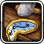 Broken Time |
마을 스킬 생산 속도 % 증가 | Archer 클래스의 모루 재료 생산 속도를 높여줍니다. |
| Focused Soul | 전문 스킬 경험치 획득량 % 증가 | 새로운 모루 재료를 해금하는 Smithing 레벨을 더 빨리 달성하게 도와줍니다. |
| Yea I Already Know | 전문 스킬 레벨업 후 다음 레벨의 % 지점에서 시작 | Smithing 레벨당 필요 경험치를 줄여주지만, 민첩성(AGI)이 높아지는 후반에 더 효과적입니다. |
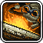 Godly Creation |
제작 장비에 특수 보너스가 붙을 확률 | 설명은 강해 보이지만 실제로는 STR·AGI·WIS·LUK 중 하나가 +4만 추가되어 우선순위가 낮습니다. World 2에서 최대 +12까지 증가 가능하지만 여전히 약한 탤런트입니다. |
기타 Smithing 강화 요소
게임 진행에 따라 아래의 중요한 Smithing 부스트들이 해금됩니다.
| 강화 요소 | 효과 | 출처 |
|---|---|---|
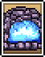 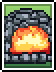 Fire Forge & Cinder Forge 카드 | Smithing 경험치 % | 제련소에서 주괴를 수령할 때 드롭 |
 Bob Build Guy 스타 사인 Bob Build Guy 스타 사인 | 마을 스킬 속도 10% | World 1 Star Signs |
| Infinity Hammer | 모루 아이템 +1 생산 | Gem Shop |
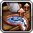 Make or Break | 생산 속도 % | 길드 보너스 |
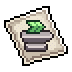 Anvil Stamp | 생산 속도 % | Copper Ore 드롭 우표 |
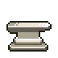 Anvil Statue | 생산 속도 % | World 2 몬스터 드롭 조각상 (Sandy Pot, Mimic, Crabcake, Crystal Crabal, Biggie Hours, Efaunt, Sandstone Bronze Chest) |
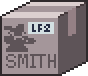 Blacksmith Box | Smithing 경험치 % | World 2 Post Office |
| Hammer Hammer | 생산 속도 % 및 모루 아이템 +1 생산 | World 2 연금술 |
| Anvilnomics | 모루 포인트 비용 감소 | World 2 연금술 |
| Godlier Creation | Godly Creation 탤런트 스탯 효과를 +4에서 +12로 증가 | World 2 Trash Island 해금 후 World 1 뇌물 목록에 등장 |
| Anvil Production Pipeline | 모든 모루 생산 아이템 자동 수령 | World 3 건설 |

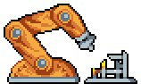